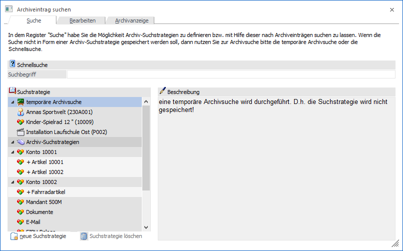
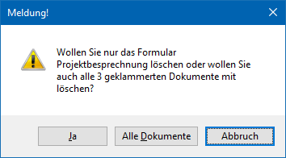
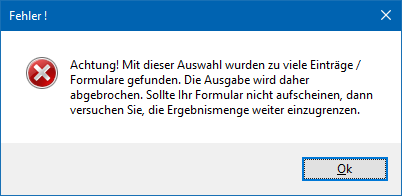
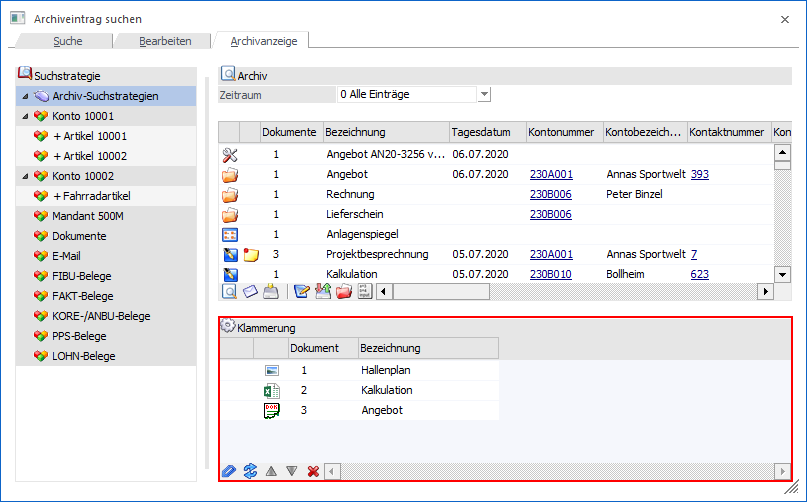

In jeder Applikation der WinLine START kann über…
1 CRM
1 Archiveintrag suchen
… oder dem CRM-Ribbon (Buttons "Archiveintrag suchen") die Archivsuche gestartet werden.
Hinweis
In der Archivsuche können grundsätzlich alle Archivdokumente angezeigt werden, für welche der Benutzer ein entsprechendes Recht aufweist (gesteuert über Berechtigungsprofile). Wird die Option "Auto-Archivbelege" in den Archiv-Parametern allerdings auf "1 - beschlagworten" gestellt, dann erfolgt immer eine automatische Selektion auf die Dokumente des aktuellen Mandanten.

Das Fenster "Archiveintrag suchen" ist hierbei in die folgenden Register unterteilt, welche in den nachfolgenden Kapiteln detailliert beschrieben werden:
ü Register "Suche"
In diesem Register
kann entschieden werden, nach welcher Art die Suche durchgeführt werden
soll.
ü Register "Bearbeiten"
In diesem
Register können fixe oder temporäre Suchstrategien angelegt bzw. editiert
werden.
ü Register "Archivanzeige"
In diesem
Register werden alle gefundenen Archiveinträge, gemäß den zuvor getroffenen
Einstellungen, angezeigt.
Buttons
Ø Anzeigen
Durch Anwahl des Buttons "Anzeigen" bzw. der Taste F5 wird die Suche bzw. Aktualisierung der Suchergebnisse gestartet. Befindet man sich im Register "Bearbeiten", dann wird zusätzlich die ggfs. angelegte oder geänderte Suchstrategie gespeichert.
Ø Ende
Durch Anklicken des Buttons "Ende" bzw. der Taste ESC wird das Fenster geschlossen.
Ø Löschen (nur Register "Archivanzeige")
Durch Anklicken des Buttons "Löschen" wird der aktive Archiveintrag gelöscht.
Achtung
Das Löschen kann in den Archiv - Parametern parametrisiert werden.
Hinweis
Wird versucht einen geklammerten Archiveintrag zu löschen, dann wird zunächst diese Meldung angezeigt:

ü Ja
Wird die Meldung mit "Ja"
bestätigt, dann wird nur das erste Dokument aus dem Archiv entfernt.
ü Alle Dokumente
Wird die Meldung
mit "Alle Dokumente" bestätigt, dann werden alle geklammerten Dokument des
aktuellen Eintrags aus dem Archiv entfernt.
ü Abbruch
Wird die Meldung mit
"Abbruch" bestätigt, dann wird gar kein Dokument gelöscht.
Ø Zurück / Vor
Mit Hilfe dieser Buttons kann durch die 3 Register der Suche navigiert werden. Im Register "Suche" steht der Button "Vor" und im Register "Bearbeiten" die Buttons "Zurück" und "Vor" zur Verfügung.
Ø Suchergebnis aktualisieren (nur Register "Archivanzeige")
Durch Anklicken dieses Buttons wird das Suchergebnis (das sich durch diverse Arbeiten verändert haben könnte) neu geladen bzw. angezeigt.
Ø Suche fortsetzen (nur Register "Archivanzeige")
Wird die Anzeige der Suchergebnisse durch die Einstellung "Archivsuche - maximale Zeilenanzahl" in den Archiv-Parametern begrenzt, so kann mittels dieses Buttons die Suche fortgesetzt werden. Hierfür wird die Suchstrategie temporäre um die Bedingung "012 - Dokumentennummer < xxx" ergänzt.
Hinweis
Wird die Anzahl der definierten Datensätze überschritten, so wird man über folgende Meldung auf dieses hingewiesen:

Ø OCR-Langtext hinzufügen (nur Register "Archivanzeige")
Dieser Button unterteilt sich in 3 Bereiche:
ü OCR-Langtext hinzufügen
Für das
aktuell ausgewählte Archivdokument wird eine Texterkennung durchgeführt und
dieser extrahierte Text zum Dokument als Schlagwort "95 Langtext"
hinzugefügt.
ü Konvertierung in eine
durchsuchbare PDF-Datei
Das aktuell ausgewählte Archivdokument wird in eine
durchsuchbare PDF-Datei konvertiert und eine neue Version zu diesem Dokument
daraus erzeugt.
ü Konvertierung in eine
durchsuchbare PDF-Datei und OCR-Langtext hinzufügen
Mit dieser Option wird
sowohl die Texterkennung als auch die Konvertierung in eine durchsuchbare
PDF-Datei durchgeführt.
Ø Vorschau
Durch Anwahl dieses Buttons wird die Dokumenten-Vorschau aktiviert, in welcher die einzelnen Archivdokumente betrachtet werden können.
Hinweis
Ob die Vorschau aktiviert ist oder nicht wird benutzerspezifisch abgespeichert.
Ø Klammerung (nur Register "Archivanzeige")
Durch Anwahl des Buttons "Klammerung" wird die Tabelle "Klammerung" angezeigt. In dieser können mehrere Archivdokumente zu einem Eintrag zusammengefasst werden. Dieses ist dann sinnvoll, wenn z.B. mehrere Scans eines Geschäftsvorfalls zusammengefasst werden sollen. Natürlich können auch die Einträge eines z.B. Besprechungstermin (Protokoll, Bilder, etc.) zusammengefasst werden. Neben dem zusammenfassen ist auch ein Auflösen der Klammerung oder das Verschieben der Reihenfolge innerhalb der Klammerung möglich.

Hinweis
Die Bedienung der Tabelle wird im Kapitel Archiveintrag suchen - Register "Archivanzeige" erläutert.